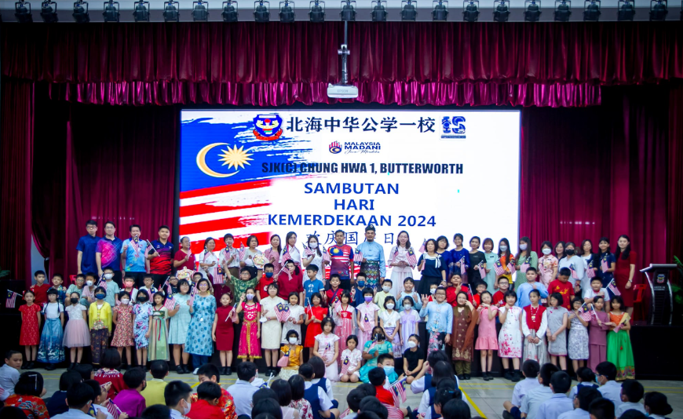
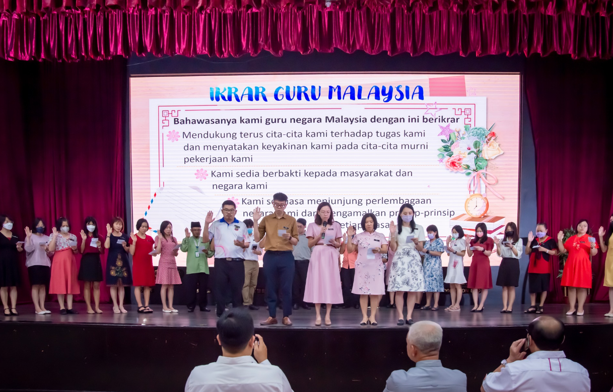
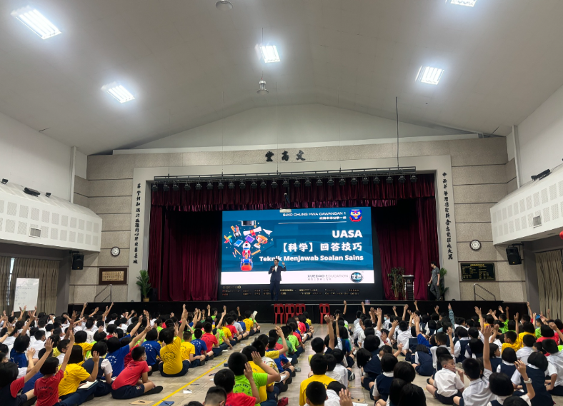
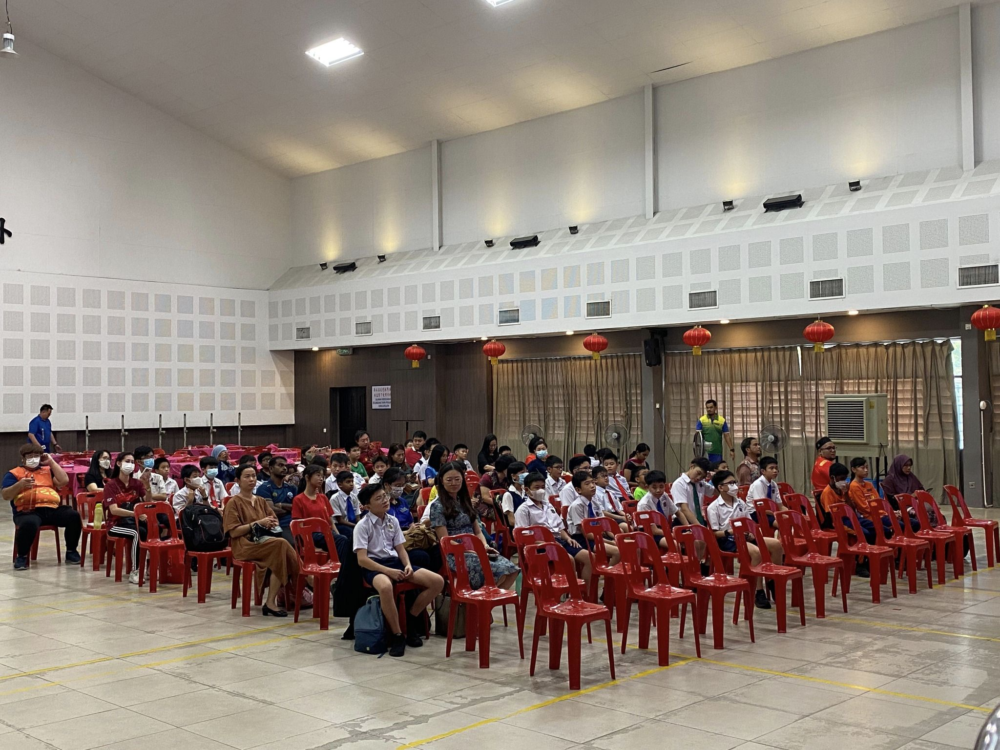
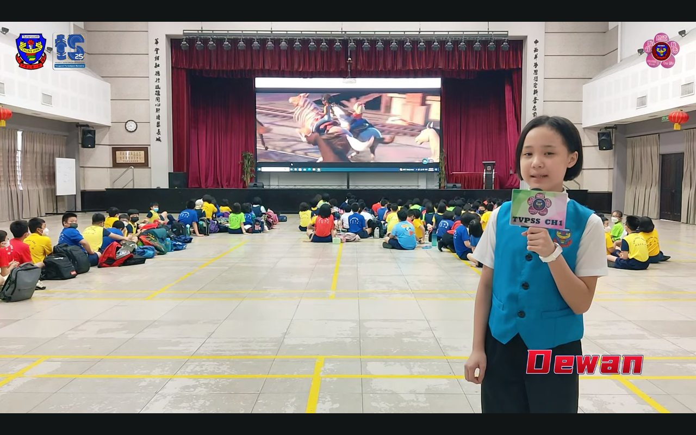

School Hall

- It is a very comfortable place for every school member, especially teachers and students to gather here. Every Monday of the month, students and teachers will gather here. In the morning, they will sing" Lagu Negaraku" and" Untuk Negeri Kita". Besides, they will also read the" Rukun Negara". Then, our school principal will also give a speech to every student.


- During some celebration days, our school hall will be used to celebrate them, like Chinese New Year, National Day, Malaysia Day and many more. It is a golden opportunity for all the students and teachers to celebrate some special festival together.

- When there are some speeches from other people, they will also give a speech here. All of the students can listen and learn some interesting knowledge from them.


- Every year, there will be lots of activities that are held in our school, like drawing competitions, singing competitions, etc. But, some competitions will be held in our school hall like an English story competition, a singing competition, etc. All the students will gather to see some students attending the competitions. By attending these competitions, students will learn more vocabulary.


- Apart from that, SJKC CHUNG HWA 1’s hall is a place that can do many amazing activities. Therefore, we have to always keep our school clean and new.